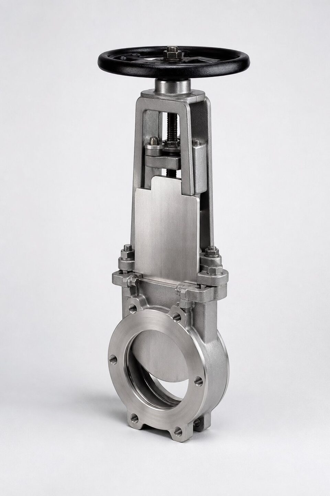

نایف گیت چیست؟
نایف گیت نسخهای تخصصی از خانواده شیرهای کشویی است که به جای گوه ضخیم، یک تیغه نازک و تیز دارد. این تیغه با حرکت عمودی از میان سیال عبور میکند و چون لبه آن تیز است، ذرات معلق نمیتوانند مانع نشستن آن شوند؛ ذرات یا کنار زده میشوند یا در نشیمنگاههای مخصوص طراحیشده جای میگیرند. بدنه معمولاً سبک و فشرده است و در سایزهای بزرگ، به یکی از اقتصادیترین گزینهها برای قطع جریان سیالهای دشوار تبدیل میشود.

کاربردهای اصلی
- صنایع کانی و فرآوری مواد معدنی: خطوط دوغاب با ذرات ساینده.
- صنایع خمیر و کاغذ: قطع جریان خمیر با الیاف.
- تصفیهخانههای فاضلاب: خطوط لجن و سیالهای حاوی ذرات.
- صنایع غذایی با سیالهای خمیری.
- سیلوها و نقاط تخلیه مواد جامد معلق در سیال.
انواع آببندی
رایجترین طرح، نشیمنگاه الاستومری یکطرفه است: تیغه روی یک رینگ الاستومری مینشیند و آببندی خوبی در جهت اصلی فراهم میکند. این رینگها قابل تعویضاند و هزینه نگهداری را پایین نگه میدارند. در طرحهای بدون نشیمنگاه یا فلز به فلز، آببندی ضعیفتر است اما برای سیالهایی که الاستومر را تخریب میکنند تنها گزینهاند. برخی طرحهای پیشرفته نیز با نشیمنگاههای دوطرفه، آببندی در هر دو جهت را فراهم میکنند. انتخاب نوع آببندی باید بر اساس سیال، جهت جریان و معیار نشتی مورد انتظار انجام شود.
محدودیتها
نایف گیت برای فشارهای پایین و متوسط طراحی شده و در کلاسهای فشاری بالا کاربرد ندارد؛ تیغه نازک تحمل فشار زیاد را ندارد. در سایزهای بزرگ و مسیرهای عمودی، وزن و هدایت تیغه باید در طراحی دیده شود. همچنین این شیر برای تنظیم جریان مناسب نیست و مانند گیت معمولی باید کاملاً باز یا کاملاً بسته کار کند. در سیالهایی که ذرات بسیار درشت یا رشتهای دارند، باید طرح نشیمنگاه متناسب با سازنده بررسی شود تا از تجمع و گیر کردن جلوگیری گردد.
نکات انتخاب و استعلام
در استعلام نایف گیت، مشخصات سیال (اندازه و ماهیت ذرات، غلظت، دما) اهمیت بیشتری از خود سایز دارد؛ چون طراحی نشیمنگاه بر اساس همین اطلاعات انجام میشود. جهت جریان غالب، فشار کاری واقعی و نوع عملگر (دستی، پنوماتیک یا هیدرولیک) را نیز ذکر کنید. در سایزهای بزرگ با سیکل کاری بالا، عملگر پنوماتیک سرعت و ایمنی را افزایش میدهد. مدارک تحویل نیز باید شامل گواهی مواد تیغه و بدنه و گزارش تست باشد.
نگهداری و عیبیابی نایف گیت
شیرهای نایف گیت به دلیل ساختار ساده، معمولا کمدردسرند؛ اما در سرویسهای ساینده که همان کاربرد اصلی آنهاست، چند نقطه آسیبپذیر مشخص دارند که نگهداری هدفمند آنها، عمر شیر را چند برابر میکند. تیغه شیر، مهمترین قطعه است؛ لبه تیز تیغه در هر سیکل با سایش ذرات جامد مواجه میشود و وقتی لبه گرد یا خراشیده شود، آببندی روی نشیمن مختل میگردد. بازرسی دورهای لبه تیغه و تعویض بهموقع آن، اقتصادیترین اقدام نگهداری است، چون ادامه کار با تیغه آسیبدیده، نشیمن را هم خراب و هزینه تعمیر را چند برابر میکند. نشیمنهای الاستومری، نقطه آسیبپذیر دوماند؛ تورم، پارگی یا تغییر شکل نشیمن در اثر مواد شیمیایی یا دما، خود را با نشتی در حالت بسته نشان میدهد. سازندگان معمولا جنسهای مختلف نشیمن برای سرویسهای متفاوت ارائه میدهند و اگر نشتی زودرس دارید، قبل از هر اقدامی، تناسب جنس نشیمن با سیال را بازنگری کنید. در آببندی بیرونی، پکینگ اطراف تیغه به دلیل حرکت رفت و برگشتی، مصرفی است و نیاز به تنظیم یا تعویض دورهای دارد؛ نشتی از ناحیه پکینگ معمولا با آچارکشی گلدانی برطرف میشود اما آچارکشی بیش از حد، حرکت تیغه را سنگین و سایش را بیشتر میکند. در محرکهای پنوماتیکی، هوای تمیز و خشک اهمیت دارد؛ رطوبت هوا در درازمدت سیلندر را خراب میکند و واحد مراقبت با فیلتر و رگولاتور مناسب باید قبل از شیر نصب باشد. اگر شیر در موقعیت نیمهباز کار میکند، ارتعاش تیغه در مسیر جریان میتواند به سایش ناهمگن منجر شود؛ در این حالت یا از طراحیهای مخصوص کنترل استفاده کنید یا شرایط کار را بازنگری نمایید. در نهایت، برنامهای برای چرخش دورهای شیرهایی که ماهها بیحرکت میمانند تعریف کنید، چون رسوب و خوردگی، تیغه بیحرکت را در لحظه نیاز گیر میاندازد.
جمعبندی
نایف گیت پاسخ صنعت به سیالهای حاوی ذرات است: تیغه تیز، بدنه فشرده و نشیمنگاه قابل تعویض، آن را برای دوغاب و خمیر بیرقیب میکند. با شناخت محدودیت فشاری و انتخاب آببندی متناسب سیال، این شیر در سختترین سرویسها نیز عمر قابل قبولی دارد و هزینه نگهداری را پایین نگه میدارد.
سوالات رایج
نایف گیت برای چه سیالهایی طراحی شده است؟
دوغاب، خمیر کاغذ، فاضلاب حاوی ذرات و به طور کلی سیالهایی که ذرات جامد دارند و شیرهای معمولی در آنها گیر میکنند یا سایش شدید میبینند.
چرا تیغه آن تیز است؟
تیغه تیز میتواند ذرات معلق را کنار زده و از میان سیال عبور کند؛ در حالی که گوه شیر دروازهای معمولی در چنین سیالهایی گیر کرده و آسیب میبیند.
آیا نایف گیت برای فشار بالا مناسب است؟
خیر؛ این شیرها عمدتاً برای فشارهای پایین و متوسط طراحی شدهاند و برای سرویسهای پرفشار باید به طرحهای دیگر رفت.
آببندی این شیرها چگونه است؟
با نشیمنگاههای الاستومری قابل تعویض یا طراحی فلز به فلز؛ در بسیاری طرحها نشیمنگاه یکطرفه است و جهت نصب اهمیت دارد.
مطالب مرتبط
با ذکر سایز، فشار کاری و مشخصات سیال، نایف گیت با نشیمنگاه متناسب به همراه مدارک عرضه میشود.
مشاهده صفحه محصول ← ثبت RFQ همین محصولتامین این تجهیزات را به پیشرو تجهیز فرتاک بسپارید
شرکت پیشرو تجهیز فرتاک تامینکننده تخصصی تجهیزات صنعتی برای پروژههای نفت، گاز، پتروشیمی، فولاد و نیروگاهی است. برای دریافت پیشنهاد فنی و قیمت، استعلام (RFQ) خود را ثبت کنید تا کارشناسان مهندسی فروش در کوتاهترین زمان پاسخ دهند.
- تامین شیرآلات صنعتیخانواده کامل شیر با گواهی مواد و تست
- تامین تجهیزات صنایع نفت و گازپکیج مواد مطابق وندورلیست